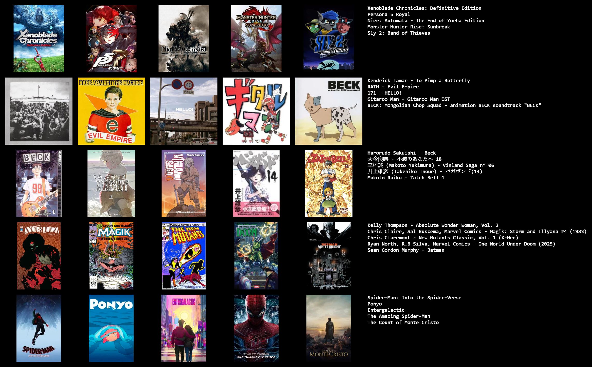

About
My name is Shaunn Roberts and I'm a multi faceted hobbyist.
Basically I have more hobbies than time to do them all.
I am a visual artist, I draw traditonally with pencil and paper to try and recreate a manga style. Every hobby
I pick up lends to me enjoying the others more.
Visual arts multiplies my adoration for manga and comics for their powerful artist eye,
and music for having what it takes to fully throw yourself into something unyieldingly, the ability to throw the good, the bad and the ugly
is already a difficult task but to take that concept and apply it yourself is a herculean task shared by all art forms,
and I respect that ability to no end.
I love drawing, I love manga, comics, novels, journaling, videogames, movies, music and newly, programming.
My current hobby/career path is programming, I completed my degree in business marketing and I now intend to pursue that as a web developer!
These are some of my favourite things!
